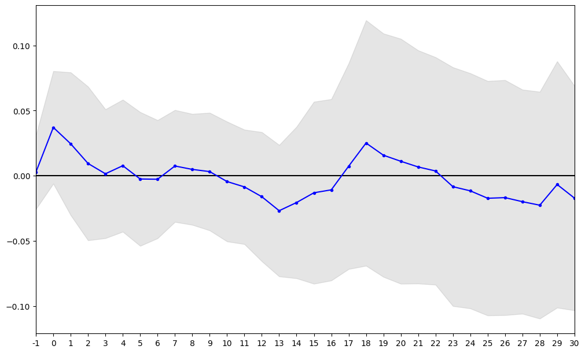
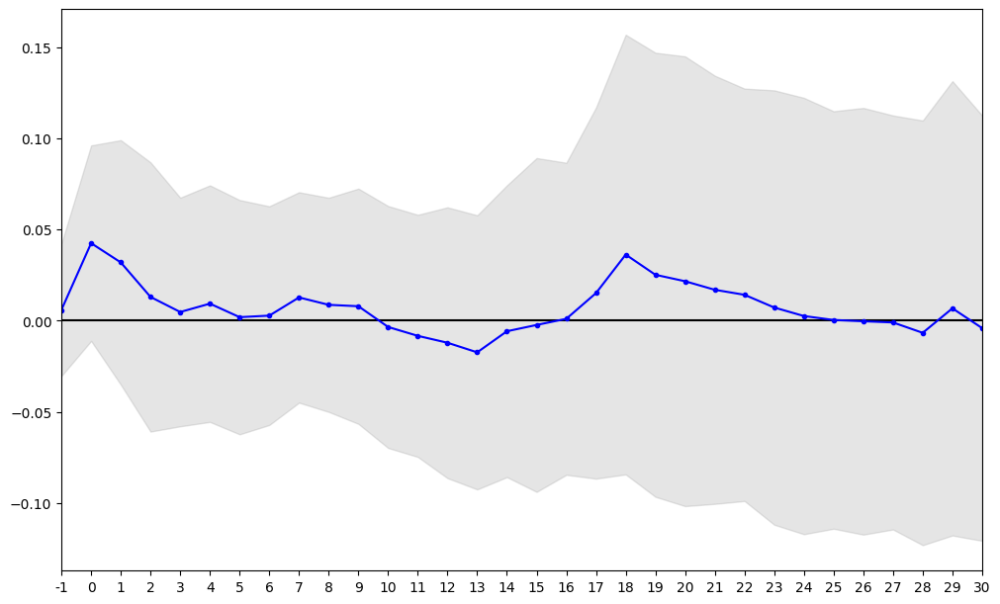

import pandas as pd
import eventstudy因为经常要计算 CAR，所以写了一个脚本，支持市场模型和三因子模型，测试数据都来自于国泰安数据库，视频介绍在 b 站。
脚本的核心是 EventStudy 类。下面是一个简单的例子：
import eventstudy
es_market_model = eventstudy.EventStudy(
sample_market_model, # 事件样本
"Market", # 正常收益率估计模型
market_model_data, # 估计模型所需数据
daily_stock_returns, # 个股历史回报率
-1, # t1
30, # t2
10, # span
200 # 估计期长度
)市场模型
R_{it} = \alpha_i + \beta_iR_{Mt} + \varepsilon_{it}
R_{it} 表示公司 i 在第 t 个交易日的考虑现金红利再投资的个股回报率，R_{Mt} 表示第 t 个交易日公司所在分市场的市场回报率，等于考虑现金红利再投资的日市场回报率（流通市值加权平均法）。
daily_stock_returns = pd.read_csv(
"./data/daily_stocks_returns.csv", dtype={"ticker": str}
)daily_stock_returns 是个股历史回报率，注意个股历史回报率需要包含如下测试字段，即 ticker、TradingDate 和 return，分别代表股票代码、交易日和个股回报率。
daily_stock_returns.head()| ticker | TradingDate | return | |
|---|---|---|---|
| 0 | 000001 | 2013-11-29 | -0.001468 |
| 1 | 000001 | 2013-12-02 | 0.011029 |
| 2 | 000001 | 2013-12-03 | -0.015273 |
| 3 | 000001 | 2013-12-04 | 0.004431 |
| 4 | 000001 | 2013-12-05 | -0.012500 |
sample_market_model = pd.read_csv(
"./data/sample_for_marketmodel.csv", dtype={"ticker": str}
)sample_market_model 是事件样本，注意事件样本需要包含如下测试字段，即 EventDate、ticker 和 MarketTypeID，分别代表事件日、股票代码和市场类型。
sample_market_model.head()| EventDate | ticker | MarketTypeID | |
|---|---|---|---|
| 0 | 2016-04-21 | 002177 | 4 |
| 1 | 2016-11-10 | 300188 | 16 |
| 2 | 2018-01-12 | 300002 | 16 |
| 3 | 2018-01-15 | 000935 | 4 |
| 4 | 2018-01-15 | 000021 | 4 |
market_model_data 是市场模型所需要的数据，注意市场模型数据需要包含如下测试字段，即 MarketTypeID、TradingDate 和 market_returns，分别代表市场类型、交易日和市场收益率。
market_model_data = pd.read_csv("./data/market_model_data.csv")market_model_data.head()| MarketTypeID | TradingDate | market_returns | |
|---|---|---|---|
| 0 | 1 | 1990-12-19 | NaN |
| 1 | 1 | 1990-12-20 | 0.050067 |
| 2 | 1 | 1990-12-21 | 0.039671 |
| 3 | 1 | 1990-12-24 | 0.049380 |
| 4 | 1 | 1990-12-25 | 0.049938 |
es_market_model = eventstudy.EventStudy(
sample_market_model.head(10),
"Market",
market_model_data,
daily_stock_returns,
-1,
30,
10,
200,
)res_market_model = es_market_model.get_result()Tasks finished: 100%get_result() 返回一个字典，字典中包含样本 CAR、CAR 的描述性统计结果、剔除的样本和剩余样本。
res_market_model.keys()dict_keys(['describe_res', 'sample_removed', 'sample_remained', 'sample_cars'])res_market_model["sample_remained"]| EventDate | ticker | MarketTypeID | |
|---|---|---|---|
| 0 | 2016-04-21 | 002177 | 4 |
| 1 | 2016-11-10 | 300188 | 16 |
| 2 | 2018-01-12 | 300002 | 16 |
| 3 | 2018-01-15 | 000935 | 4 |
| 4 | 2018-01-15 | 000021 | 4 |
| 5 | 2018-01-30 | 300108 | 16 |
| 6 | 2018-04-05 | 600602 | 1 |
| 7 | 2018-12-11 | 300356 | 16 |
| 8 | 2019-05-08 | 300427 | 16 |
| 9 | 2019-07-02 | 000917 | 4 |
eventstudy.res_plot(re_market_model["sample_cars"], 0.90)
三因子模型
R_{it} - R_{ft} = \alpha_i + b_i(R_{Mt}-R_{ft}) + s_iSMB_t + h_iHML_t + \varepsilon_it
famafrench_factors = pd.read_csv("./data/famafrench_factors_data.csv")famafrench_factors 是三因子模型数据，注意三因子数据需要包含如下测试字段，即 MarketTypeID、TradingDate、RiskPremium、SMB、HML 和 risk_free_rate，分别代表市场类型、交易日、风险溢价因子、SMB、HML 和无风险利率。
famafrench_factors.head()| MarketTypeID | TradingDate | RiskPremium | SMB | HML | risk_free_rate | |
|---|---|---|---|---|---|---|
| 0 | P9706 | 1990-12-19 | 2.473374 | NaN | NaN | 0.0227 |
| 1 | P9710 | 1990-12-19 | 2.473374 | NaN | NaN | 0.0227 |
| 2 | P9709 | 1990-12-19 | 2.473374 | NaN | NaN | 0.0227 |
| 3 | P9712 | 1990-12-19 | 2.473374 | NaN | NaN | 0.0227 |
| 4 | P9713 | 1990-12-19 | 2.473374 | NaN | NaN | 0.0227 |
sample_famafrench = pd.read_csv("./data/sample.csv", dtype={"ticker": str})sample_famafrench 是事件样本，与前述要求一致，需要包含如下测试字段。
sample_famafrench.head()| EventDate | ticker | MarketTypeID | |
|---|---|---|---|
| 0 | 2016-04-21 | 002177 | P9706 |
| 1 | 2016-11-10 | 300188 | P9705 |
| 2 | 2018-01-12 | 300002 | P9705 |
| 3 | 2018-01-15 | 000935 | P9706 |
| 4 | 2018-01-15 | 000021 | P9706 |
es_famafrench = eventstudy.EventStudy(
sample_famafrench.head(10),
"FamaFrench",
famafrench_factors,
daily_stock_returns,
-1,
30,
10,
200,
)res_famafrench = es_famafrench.get_result()Tasks finished: 100%res_famafrench.keys()dict_keys(['describe_res', 'sample_removed', 'sample_remained', 'sample_cars'])res_famafrench["describe_res"]| count | mean | std | min | 25% | 50% | 75% | max | t-statstics | p-value | |
|---|---|---|---|---|---|---|---|---|---|---|
| -1 | 10.0 | 0.005946 | 0.050654 | -0.042915 | -0.026691 | -0.008127 | 0.004223 | 0.102982 | 0.371196 | 0.719079 |
| 0 | 10.0 | 0.042546 | 0.074948 | -0.035565 | -0.010073 | 0.022935 | 0.060273 | 0.202987 | 1.795155 | 0.106202 |
| 1 | 10.0 | 0.031981 | 0.093752 | -0.069651 | -0.007391 | -0.003999 | 0.021624 | 0.263352 | 1.078718 | 0.308774 |
| 2 | 10.0 | 0.013060 | 0.103207 | -0.101936 | -0.029064 | -0.023455 | 0.024744 | 0.232986 | 0.400162 | 0.698369 |
| 3 | 10.0 | 0.004802 | 0.087637 | -0.130160 | -0.043901 | -0.016113 | 0.064789 | 0.143388 | 0.173265 | 0.866277 |
| 4 | 10.0 | 0.009385 | 0.090681 | -0.128522 | -0.046949 | -0.022871 | 0.092813 | 0.147597 | 0.327286 | 0.750935 |
| 5 | 10.0 | 0.001967 | 0.089825 | -0.153967 | -0.036466 | -0.013752 | 0.072597 | 0.134979 | 0.069254 | 0.946301 |
| 6 | 10.0 | 0.002818 | 0.083841 | -0.180795 | -0.027049 | 0.003889 | 0.059211 | 0.121202 | 0.106300 | 0.917676 |
| 7 | 10.0 | 0.012787 | 0.080665 | -0.159540 | -0.014551 | 0.020998 | 0.050448 | 0.150747 | 0.501306 | 0.628188 |
| 8 | 10.0 | 0.008737 | 0.082093 | -0.163451 | -0.025143 | 0.023856 | 0.041238 | 0.142756 | 0.336549 | 0.744171 |
| 9 | 10.0 | 0.007964 | 0.090177 | -0.153678 | -0.022929 | 0.023700 | 0.070196 | 0.139917 | 0.279291 | 0.786334 |
| 10 | 10.0 | -0.003413 | 0.092743 | -0.155530 | -0.031332 | 0.009525 | 0.043308 | 0.138305 | -0.116377 | 0.909909 |
| 11 | 10.0 | -0.008281 | 0.092809 | -0.184369 | -0.031162 | 0.005624 | 0.017887 | 0.132797 | -0.282173 | 0.784192 |
| 12 | 10.0 | -0.012063 | 0.103813 | -0.200354 | -0.033344 | 0.006032 | 0.039354 | 0.143062 | -0.367457 | 0.721771 |
| 13 | 10.0 | -0.017322 | 0.105090 | -0.222945 | -0.021649 | -0.004715 | 0.024077 | 0.145804 | -0.521229 | 0.614789 |
| 14 | 10.0 | -0.005754 | 0.111856 | -0.203818 | -0.031657 | -0.013775 | 0.070799 | 0.152910 | -0.162683 | 0.874362 |
| 15 | 10.0 | -0.002302 | 0.127973 | -0.219148 | -0.050842 | -0.027914 | 0.074407 | 0.224666 | -0.056889 | 0.955877 |
| 16 | 10.0 | 0.001072 | 0.119628 | -0.205463 | -0.060483 | -0.022024 | 0.098753 | 0.177393 | 0.028340 | 0.978010 |
| 17 | 10.0 | 0.015176 | 0.142262 | -0.169627 | -0.069435 | -0.026533 | 0.128153 | 0.254051 | 0.337348 | 0.743589 |
| 18 | 10.0 | 0.036296 | 0.168552 | -0.138709 | -0.067674 | -0.031261 | 0.149025 | 0.306288 | 0.680958 | 0.513035 |
| 19 | 10.0 | 0.025216 | 0.170236 | -0.203934 | -0.074913 | -0.028633 | 0.146160 | 0.305098 | 0.468413 | 0.650627 |
| 20 | 10.0 | 0.021668 | 0.172407 | -0.194432 | -0.079519 | -0.053014 | 0.160581 | 0.333420 | 0.397440 | 0.700304 |
| 21 | 10.0 | 0.016986 | 0.164136 | -0.170316 | -0.096441 | -0.043403 | 0.144772 | 0.317196 | 0.327251 | 0.750961 |
| 22 | 10.0 | 0.014237 | 0.158083 | -0.164113 | -0.086671 | -0.046541 | 0.129103 | 0.284242 | 0.284792 | 0.782248 |
| 23 | 10.0 | 0.007261 | 0.166520 | -0.155520 | -0.115051 | -0.052748 | 0.123317 | 0.313846 | 0.137894 | 0.893360 |
| 24 | 10.0 | 0.002597 | 0.167286 | -0.163574 | -0.109552 | -0.051470 | 0.117628 | 0.328568 | 0.049084 | 0.961924 |
| 25 | 10.0 | 0.000427 | 0.160041 | -0.160845 | -0.106606 | -0.054970 | 0.107540 | 0.310538 | 0.008434 | 0.993455 |
| 26 | 10.0 | -0.000277 | 0.163577 | -0.144695 | -0.116407 | -0.067567 | 0.126459 | 0.307726 | -0.005351 | 0.995848 |
| 27 | 10.0 | -0.000930 | 0.158710 | -0.126786 | -0.114920 | -0.073548 | 0.098323 | 0.323083 | -0.018528 | 0.985622 |
| 28 | 10.0 | -0.006622 | 0.162787 | -0.141247 | -0.117763 | -0.075430 | 0.085477 | 0.329415 | -0.128646 | 0.900467 |
| 29 | 10.0 | 0.006816 | 0.174149 | -0.130723 | -0.116153 | -0.079282 | 0.140219 | 0.336229 | 0.123763 | 0.904223 |
| 30 | 10.0 | -0.004030 | 0.163063 | -0.161690 | -0.112566 | -0.068521 | 0.070614 | 0.332546 | -0.078147 | 0.939421 |
eventstudy.res_plot(res_famafrench["sample_cars"])